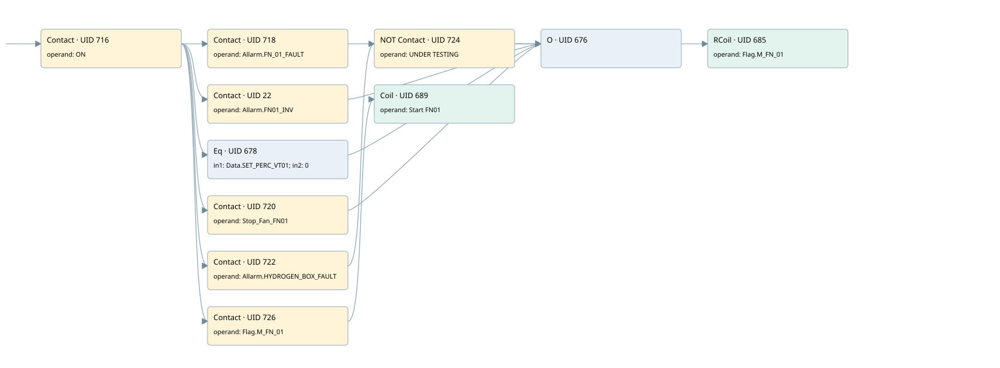

fn01
motors 1 · 검색 색인 순서 22 · 원본 내부 NID 추정 22
백업 PLF 원본의 2797818 바이트 위치에서 복원한 XML. 검색 문서 1951의 객체 키 16102200a611000000000000와 연결했다. 이름 해석 11/11개. 남은 RefId는 상수 또는 미해석 참조다.
연결 구조 다시 그리기
원본 Part/PCon/Wire를 이용한 연결도다. TIA 화면의 래더 배치 또는 실행 결과를 재현한 그림은 아니다. 핀 연결은 아래 표와 원본 XML을 기준으로 읽는다. 노드 위에 마우스를 두면 피연산자 이름을 볼 수 있다.

접점·코일·블록과 피연산자
| Part UID | Gate | Negated 핀 | 연결 피연산자 |
|---|---|---|---|
| 716 | Contact | operand = ON | |
| 718 | Contact | operand = Allarm.FN_01_FAULT | |
| 22 | Contact | operand = Allarm.FN01_INV | |
| 678 | Eq | in1 = Data.SET_PERC_VT01; in2 = 0 | |
| 720 | Contact | operand = Stop_Fan_FN01 | |
| 722 | Contact | operand = Allarm.HYDROGEN_BOX_FAULT | |
| 724 | Contact | operand | operand = UNDER TESTING |
| 676 | O | ||
| 685 | RCoil | operand = Flag.M_FN_01 | |
| 726 | Contact | operand = Flag.M_FN_01 | |
| 689 | Coil | operand = Start FN01 |
접점 경로를 펼친 조건식
Contact·O/A·비교기의 원본 연결을 읽기 쉽게 펼친 보조 해석이다. POWER는 전원 레일 시작을 뜻한다. 호출 블록·에지·타이머의 내부 동작과 다중 쓰기 순서는 이 표로 실행 검증하지 않았다. 미해석 핀과 RefId는 원문 연결표에서 확인한다.
| UID | 동작 | 대상 | 원본 접점 경로 | 내용 |
|---|---|---|---|---|
| 685 | RCoil | Flag.M_FN_01 | ((ON AND Allarm.FN_01_FAULT) OR (ON AND Allarm.FN01_INV) OR (ON AND [Data.SET_PERC_VT01 = 0]) OR (ON AND Stop_Fan_FN01) OR ((ON AND Allarm.HYDROGEN_BOX_FAULT) AND NOT [UNDER TESTING])) | 조건 성립 시 Reset |
| 689 | Coil | Start FN01 | (ON AND Flag.M_FN_01) | 조건에 따른 Coil 기록 |
원본 배선 연결
| Wire UID | 동일 Wire 연결 끝점 |
|---|---|
| 728 | Powerrail {} ↔ Part 716.in |
| 700 | ORef 690 (ON) ↔ Part 716.operand |
| 717 | Part 716.out ↔ Part 718.in ↔ Part 22.in ↔ Part 678.pre ↔ Part 720.in ↔ Part 722.in ↔ Part 726.in |
| 701 | ORef 691 (Allarm.FN_01_FAULT) ↔ Part 718.operand |
| 719 | Part 718.out ↔ Part 676.in1 |
| 21 | ORef 23 (Allarm.FN01_INV) ↔ Part 22.operand |
| 24 | Part 22.out ↔ Part 676.in2 |
| 702 | ORef 692 (Data.SET_PERC_VT01) ↔ Part 678.in1 |
| 703 | ORef 693 (0) ↔ Part 678.in2 |
| 704 | Part 678.out ↔ Part 676.in3 |
| 705 | ORef 694 (Stop_Fan_FN01) ↔ Part 720.operand |
| 721 | Part 720.out ↔ Part 676.in4 |
| 706 | ORef 695 (Allarm.HYDROGEN_BOX_FAULT) ↔ Part 722.operand |
| 723 | Part 722.out ↔ Part 724.in |
| 707 | ORef 696 (UNDER TESTING) ↔ Part 724.operand |
| 725 | Part 724.out ↔ Part 676.in5 |
| 709 | Part 676.out ↔ Part 685.in |
| 711 | ORef 697 (Flag.M_FN_01) ↔ Part 685.operand |
| 712 | ORef 698 (Flag.M_FN_01) ↔ Part 726.operand |
| 727 | Part 726.out ↔ Part 689.in |
| 714 | ORef 699 (Start FN01) ↔ Part 689.operand |
식별자 해석 근거 11개
| ORef UID | RefId | 이름 | IdentXmlPart 파일 | 해석 방법 |
|---|---|---|---|---|
| 690 | 1 | ON | 0602-IdentXmlPart.xml | UID/RID + search-text + NID agreement |
| 691 | 115 | Allarm.FN_01_FAULT | 0604-IdentXmlPart.xml | UID/RID + search-text + NID agreement |
| 23 | 211 | Allarm.FN01_INV | 0604-IdentXmlPart.xml | UID/RID + search-text + NID agreement |
| 692 | 116 | Data.SET_PERC_VT01 | 0604-IdentXmlPart.xml | UID/RID + search-text + NID agreement |
| 693 | 22 | 0 | 0606-IdentXmlPart.xml | literal candidate: UID/RID/NID + nearby named declarations + search-text agreement |
| 694 | 114 | Stop_Fan_FN01 | 0605-IdentXmlPart.xml | UID/RID + search-text + NID agreement |
| 695 | 13 | Allarm.HYDROGEN_BOX_FAULT | 0604-IdentXmlPart.xml | UID/RID + search-text + NID agreement |
| 696 | 4 | UNDER TESTING | 0602-IdentXmlPart.xml | UID/RID + search-text + NID agreement |
| 697 | 117 | Flag.M_FN_01 | 0604-IdentXmlPart.xml | UID/RID + search-text + NID agreement |
| 698 | 117 | Flag.M_FN_01 | 0604-IdentXmlPart.xml | UID/RID + search-text + NID agreement |
| 699 | 118 | Start FN01 | 0602-IdentXmlPart.xml | UID/RID + search-text + NID agreement |
검색 코드 보조 자료
참조 명칭을 찾기 위한 자료이며 실행 순서나 AND/OR 관계는 위 연결표로 확인한다.
"on" "allarm".fn_01_fault "flag".m_fn_01 "allarm".fn01_inv "data".set_perc_vt01 0 #stop_fan_fn01 "allarm".hydrogen_box_fault "under testing" "flag".m_fn_01 "start fn01"